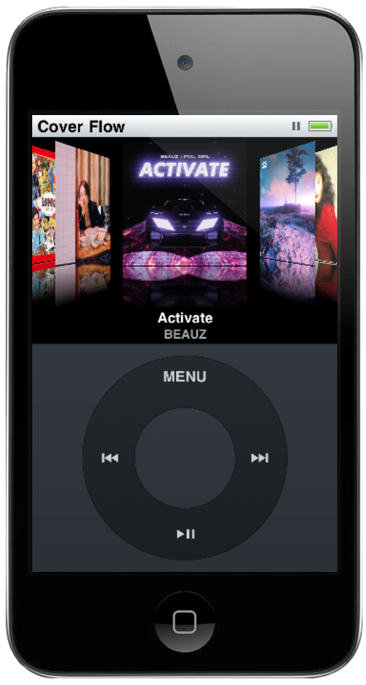
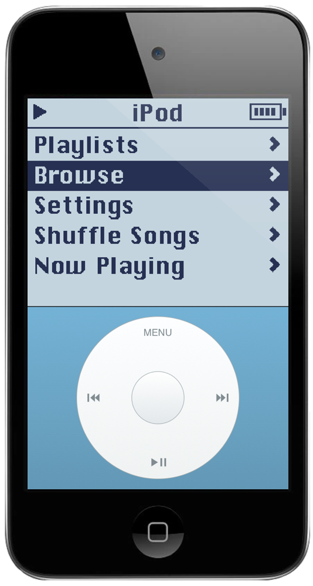
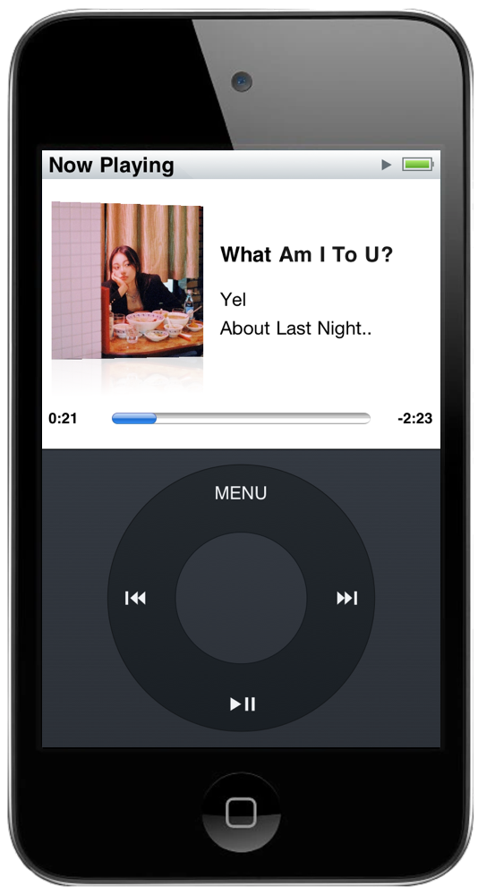

Browse your synced albums in Cover Flow on the Nano and Classic skins. Turn the wheel to move between covers, press the center to open an album, and Menu to return to your place.

Start with the third-generation Nano, or switch to the original iPod, iPod mini, or iPod classic. Choose a period-inspired color in Settings. Each skin has its own wheel, typography, and display style.

Long titles pause, then scroll across the selected row or Now Playing screen. Menus slide forward and back within the display while the wheel stays put. Small wheel movements make precise selections.
Rewind uses the iPod’s built-in Music player and synced library. Playlists, artists, albums, genres, shuffle, and repeat work offline. Spin to adjust volume; press the center on Now Playing to switch to seeking. No account, API key, or running Mac.